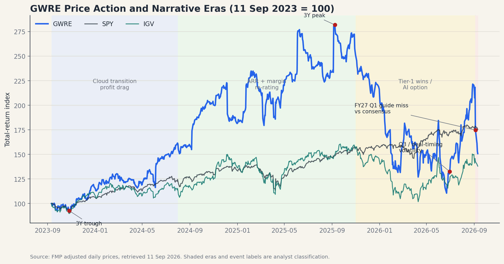
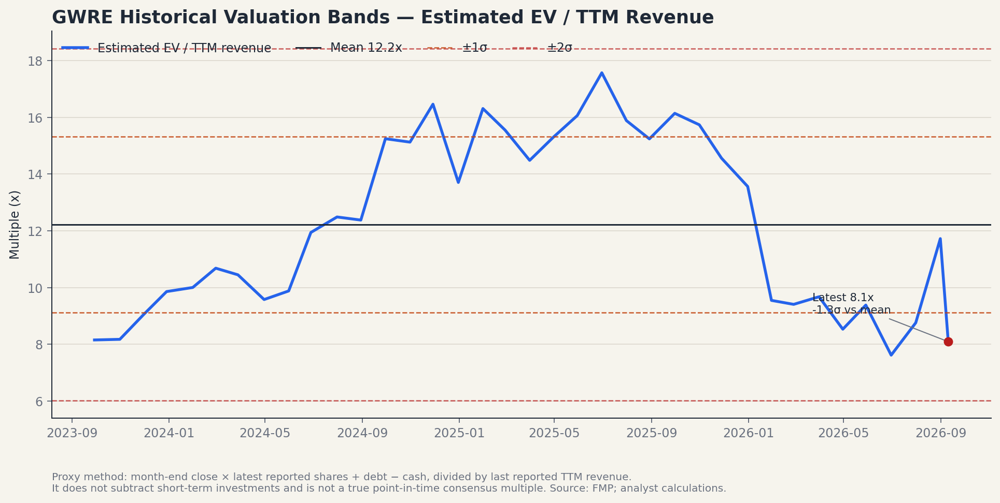
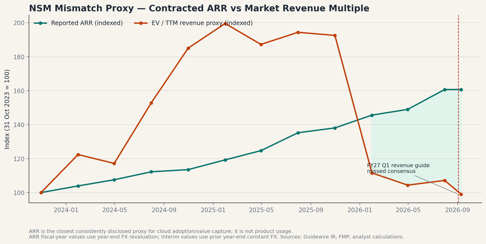

Ticker: GWRE
Date: 2026-09-11
Classification: 推进下一阶段研究（估值重置后的验证型机会）
结论：推进下一阶段研究。 2026 年 9 月 3 日业绩后，市场因 FY27 第一季度收入指引 3.72–3.78 亿美元低于 LSEG 共识 3.87 亿美元而迅速重估，次日盘中最大跌幅约 21%；但公司同期披露 FY26 ARR 12.42 亿美元、同比增长 19%，fully-ramped ARR 增长 22%，且 FY27 净新增 ARR 指引中超过一半已签约并约定 ramp 日期。[S1][S2][S6] 这构成一个可信但尚未证实的“错锚”：市场在用下一季度会计收入和 EV/Sales 定价，而真正决定 2–3 年现金创造的可能是已签约 fully-ramped ARR 如何转化为订阅收入、毛利和自由现金流。
价格重置使问题变得可研究。以 9 月 10 日收盘价 140.09 美元计，保守口径企业价值约 120 亿美元，约为 FY27 FMP 收入共识的 7.0 倍、TTM 收入的 8.1 倍；三年估值代理均值为 12.2 倍，当前约低 1.3 个标准差。[S3][S11] 但低于历史均值不等于便宜：保守三年终值情景的基准现值仅约 152 美元，只有当 FY29 收入接近当前共识、FCF margin 达 30%、且退出 EV/FCF 达 35 倍时，现值才约 214 美元（较现价约 +53%）。因此上行足够大，但依赖高质量兑现，而非单纯均值回归。
证据置信度为中等偏高：最新电话会、公司 IR、8-K、FY26 Q3 10-Q、FY25 10-K 和 FMP 市场数据已覆盖；FY26 10-K 尚未提交/取得，最新多家卖方更新不足，Goldman Marquee 认证会话不可用。承销状态仍是初步验证，不应把“高留存 + 云迁移”直接等同于无风险的 SaaS 复利。
| Source Category | Latest Source Date | Freshness Status | Age vs. Report Date |
|---|---|---|---|
| Sell-side reports | GS，2025-10-30 | 陈旧 | 约 10.5 个月；早于 FY26 Q4 |
| Earnings call transcript | FY26 Q4，2026-09-03 | 当前 | 8 天 |
| SEC filings | 8-K 2026-09-03；10-Q 2026-06-05 | 事件当前；年报待更新 | FY26 10-K 未取得 |
| Buy-side reports | GWRE 专文 2025-10-20；行业 AI 2026-01-30 | 有用但偏旧/间接 | 直接公司观点约 10.7 个月 |
| News / market reaction | 2026-09-04 | 当前 | 7 天 |
| Market / technical data | 2026-09-10 | 当前 | 最近交易日 |
| Item | Latest Situation |
|---|---|
| Market Data & Positioning | 9 月 10 日收盘 140.09 美元；52 周区间 102.30–255.91 美元；市值 116.6 亿美元。保守 EV 约 119.9 亿美元（仅扣现金、不扣短期投资）；若同时扣短期投资，EV 约 116.1 亿美元。[S3] |
| Key Financial Metrics | FY26 收入 14.75 亿美元、+23%；ARR 12.42 亿美元、+19% CC；订阅收入 9.16 亿美元、+37%；公司口径 OCF 3.90 亿美元、+30%。[S1][S2] |
| Price Action & Technicals | 近 5 日跌 27.3%，收盘低于 EMA50 约 15.1%；MACD 死叉且跌破零轴，RSI 33.6，布林带显著扩张且无看涨背离。下跌尚未形成技术性底部。[S10] |
| Positioning | 流通股约 7,505 万股、总股本约 8,326 万股。FY26 公司回购 4.1 百万股、均价 148.41 美元；本次来源未取得更新的机构持仓、空头比例或借券数据，不能判断拥挤度。[S2][S3] |
| Key Metric | Value | Implication |
|---|---|---|
| Fully-ramped ARR 增长 | 22% | 连续第 4 年快于已实现 ARR；反映已签合同未来 ramp 的积累，但不等于当期收入或已上线使用。[S2] |
| Cloud ARR / 总 ARR | 84% | 管理层定义包括已在云上及已签约迁云客户；迁移可见度高，但该口径仍可能领先真正 go-live。[S2] |
| 核心系统 gross ARR attrition | <1% | 任务关键型系统记录的粘性极强；同时需警惕大型保险客户议价和实施风险。[S2][S5] |
| 订阅与支持毛利率 | 74.5% | FY26 非 GAAP、同比 +4ppt，接近此前 FY28 目标；FY27 指引 75–76%。这是现金捕获能否兑现的核心桥梁。[S2] |
GWRE 仍处在 license / maintenance 向订阅迁移的混合阶段，GAAP EPS 受到收入分类、SBC 和非 GAAP 调整影响；市场最常用的锚应是 EV/NTM revenue，现金流作为第二道验证。当前约 7.0 倍 FY27 收入共识，FMP 共识为 FY27 收入 17.19 亿美元（+16.5%）、FY28 收入 19.89 亿美元；公司 FY27 收入指引为 17.07–17.27 亿美元，ARR 指引中值约 +18%。[S1][S3][S4]
当前价格隐含“高十几位数增长可持续，但不再为 2025 年的极高终值付费”。三年 EV/TTM revenue 代理从 2025 年高位约 17.6 倍降至 8.1 倍。历史 GS 报告曾以 16.0 倍 Q5–Q8 EV/Sales 给出 305 美元目标价，并隐含约 61 倍 EV/uFCF；该框架在最新 FY26 Q4 和价格重置后已经陈旧，只能说明过去市场锚有多激进，不能作为当前目标价。[S7][S11]
没有理想的上市纯保险核心系统同业；Duck Creek 已私有化。下表使用任务关键型垂直/工作流软件作估值情景参照，而不是宣称业务完全可比。EV 统一采用“市值 + 债务 − 现金”，故未扣短期投资；利润率为 FMP TTM 标准化口径，GWRE FCF margin 另以公司 FY26 定义列示。[S11]
| Company | Market Cap | EV / NTM Rev. | NTM Rev. Growth | TTM Op. Margin | FCF Margin |
|---|---|---|---|---|---|
| GWRE | $11.7bn | 7.0x | 16.5% | 10.2% | 24.3%* |
| VEEV | $42.4bn | 11.0x | 6.7% | 29.9% | 47.5% |
| TYL | $13.7bn | 5.6x | 5.2% | 15.1% | 29.4% |
| PCOR | $8.0bn | 5.0x | 6.4% | -4.0% | 20.6% |
| MANH | $12.0bn | 10.1x | 3.4% | 24.3% | 35.4% |
* GWRE FCF margin 使用公司定义 FY26 FCF 约 3.59 亿美元 / 收入 14.75 亿美元；其他同业为 FMP 标准化 TTM 口径，比较仅作方向性参照。四家同业 EV/NTM revenue 中位数约 7.9 倍，GWRE 低约 11%，但其 TTM 营业利润率也显著低于高质量同业。
三年累计回报：GWRE +50.8%，落后 SPY（+75.4%），高于 IGV（+38.0%）。估值图为可复现的月末代理，并非真正 point-in-time 共识倍数；NSM 图把 ARR 与估值倍数都标准化为 2023 年 10 月 = 100，以比较斜率。ARR 是公司连续披露、最接近合同价值积累的代理，不是产品使用量，也不能证明迁移已经上线。[S11]



| Lens | Assessment |
|---|---|
| CEO | 成功的核心系统云迁移与 time-to-value。 公开代理是 FY26 的 62 个 core cloud deals、105 个 fully-ramped ARR 超过 500 万美元的客户，以及核心系统 gross ARR attrition 低于 1%。这衡量客户是否愿意把任务关键型 Policy/Claims/Billing 工作流长期交给平台。[S2] |
| Long-term investor | Fully-ramped ARR 增长 × FCF 转化。 FY26 fully-ramped ARR +22%，已实现 ARR +19%；订阅与支持毛利率 74.5%，公司口径 OCF 3.90 亿美元。合同 ramp 只有持续转成 75%+ 订阅毛利与现金流，才构成股东价值。[S1][S2] |
| Market-consensus | 下一季度收入/指引与 EV/NTM revenue。 FY27 Q1 收入指引低于共识触发约 21% 盘中跌幅，即使全年收入指引略高于共识，说明市场优先惩罚近期兑现斜率。[S6] |
| Mismatch category | Healthy lag，带 narrative-trap 风险。 合同 ARR 与留存领先会计收入，市场可能把迁移造成的 license 下滑和 ramp 时点当成需求恶化；反面是 cloud ARR 口径包含“已签约迁移”而不等于上线，若 ramp 持续后移，市场锚其实是正确的。 |
保险公司需要更快产品迭代、理赔与定价效率 → 成功实施 PolicyCenter / ClaimCenter / BillingCenter → 核心保单、理赔、计费数据和工作流沉淀 → 组织依赖与迁移风险提高 → 按 DWP 定价的多年订阅、PricingCenter / ProNavigator 等模块附加 → fully-ramped ARR 按合同逐年爬坡 → 订阅毛利率提升、服务复杂度下降 → 自由现金流与回购能力
访谈证据支持实施生态是关键中间环节：Guidewire/AWS 访谈强调 SaaS 不是简单 lift-and-shift，预制集成和认证伙伴降低迁移摩擦；另一场生态访谈称 Marketplace 集成通常预制 70–90%，剩余定制仍会产生服务负担。[S9] IGB 买方文章提出相同机制，但同时提醒云费可达本地 license + maintenance 的 2–3 倍、合同 ramp 最长数年，价值兑现与客户 go-live 之间存在真实时滞。[S8]
| 三年终值情景 | 核心假设 | 现值 / 股 | 较现价 |
|---|---|---|---|
| Bear | FY29 收入共识 × 20% FCF margin × 25x EV/FCF | $100 | -29% |
| Base | FY29 收入共识 × 25% FCF margin × 30x EV/FCF | $152 | +9% |
| Bull / 错锚成立 | FY29 收入共识 × 30% FCF margin × 35x EV/FCF | $214 | +53% |
情景使用 FY29 FMP 收入共识 22.95 亿美元、10% 折现率、8,287 万股和保守净债务 3.30 亿美元；它是终值反推而非 DCF 或目标价。[S4][S11] 分布并不天然有利：基准情景几乎没有足够回报，只有 fully-ramped ARR 兑现、FCF margin 持续扩张且终值仍获高倍数时，错锚才产生有意义上行。下行机制是增长降至中低双位数、实施负担吞噬毛利、AI 仅是叙事、或市场把终值倍数压至 25 倍 FCF。
Classification: 推进下一阶段研究（估值重置后的验证型机会）。
Wrong anchor：通过，置信度中等。 FY27 license 收入预计因迁云减少约 4,600 万美元，已签合同的 ARR 又按多年 ramp；用单季收入斜率判断需求容易把会计迁移与商业弱化混在一起。新闻中的价格反应、fully-ramped ARR 与已实现 ARR 的差异，以及 84% cloud ARR/低流失率共同支持“近期收入锚可能过窄”。但 cloud ARR 包含已签约迁移客户，若项目延期或 go-live 失败，这一锚并没有错。[S2][S5][S6]
Material upside：有条件通过。 现价相对三年估值均值已显著重置，且较方向性同业中位数略有折价；错锚成立的 bull 情景约 214 美元、上行约 53%。然而 base 仅约 152 美元，意味着不能只赌估值均值回归，必须验证 30% FCF margin 附近的长期现金能力。[S11]
Clear validation path：通过。 FY27 Q1 收入/ARR、FY27 全年 ARR 与 OCF、季度订阅毛利、fully-ramped ARR 年度更新、Nationwide/Sompo 等大型迁移里程碑，以及 2026 年 10 月 27 日 Analyst Day，都会在未来数季明确支持或推翻合同价值兑现假设。[S1][S2]